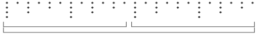
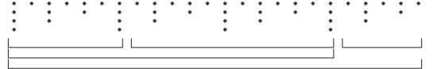
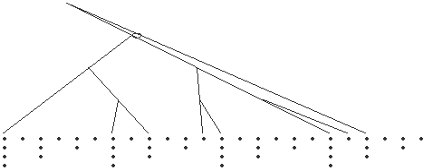

Pitch events are established in the following way:
- the number of pitch beats is calculated.
- the metrical structure is consulted to establish which beats constitute the best candidates for being allocated as pitch beats. This is established according to the following rule:
- beats which are of a relatively high level are considered as higher potential candidates for marking pitch inceptions. (in the future more rules should may be implemented to help improve the pitch beat allocation process)

Figure 1: the simplest possible grouping structure

Figure 2: a more complex grouping structure

Figure 3: a time span reduction allocated to 8 pitch beats
a.) a prolongational beginning branch is established.
b.) a prolongational ending branch is established which is associated with the end cadence beat
c.) a right branching prolongation is established from the prolongational beginning
d.) a left branching progression is associated with a branch matching the starting cadence beat.
The branch matching the last cadence beat (b) is established as the top prolongational branch, and the prolongational beginning is established as its most high level child.
Branches are then fitted inbetween these established branches so that the prolongational reduction maps all of the allocated pitch beats.

Figure 4: a prolongational reduction mapping 8 pitch beats